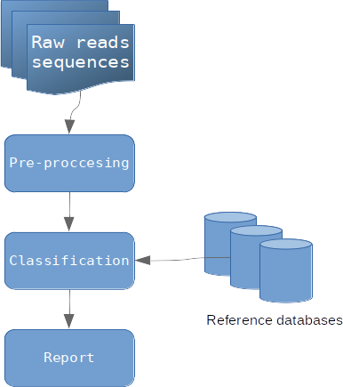

2. Vue d’ensemble¶
{kind=link}
Simple organigramme des étapes de métagénomique clinique (image par Zygnematophyce)
2.1. Étape de pré-traitement¶
L’étape de pré-traitement (ou pre-processing en anglais) est nécessaire avant toute analyse. Cette étape consiste à éliminer les séquences de mauvaise qualité et les séquences dupliquées à partir des fichiers fastq de reads bruts (raw reads sequences) issus du séquençage. Cette étape permet de réduire la quantité d’informations à traiter, et d’éliminer les informations redondantes. Vous pouvez utiliser le programme construit à cette occasion dans la session le pré-traitement des reads du tutoriel.
2.2. Création des bases de données de références¶
Avant de classifier les reads, il est indispensable de créer des bases de données de référence pour identifier un organisme. Au total, 4 bases de données ont été créées :
2.2.1. La base de données FDA-ARGOS¶
FDA-ARGOS est une base de données génomique, curée, et publique. Cette base de données est construite à des fins de diagnostic clinique. FDA-ARGOS applique des mesures de qualité sur les séquences de pathogènes qui la composent. Ces mesures de qualité sont basées par exemple sur des critères tels que l’assemblage du génome avec une couverture de 95% couplé à d’autres critères.
Au final la base de données FDA-ARGOS est composée à la date de décembre 2019 de 487 isolats avec 88,3% de bactéries, 11,1% des virus et 0,6% d’eucaryotes, représentant 189 taxons différents avec au total 81,9% des génomes d’origine clinique et les 8,1% restants de génomes environnementaux.
Pour télécharger la base de données FDA-ARGOS utiliser le programme construit décrit dans la session Le téléchargement de la base de données FDA-ARGOS du tutoriel.
2.2.2. La base de données Mycocosm¶
La base de données Mycocosm est un projet de génomique fongique du Joint Genome Institute (JGI) qui s’est associé à la communauté scientifique internationale pour soutenir l’exploration génomique des champignons.
Aujourd’hui le portail propose plus de 1000 espèces fongiques et plus de 500 familles fongiques.
Pour télécharger la base de données de Mycocosm utiliser le programme construit décrit dans la session Le téléchargement de la base de données Mycocosm du tutoriel.
2.2.3. La base de données FungiDB¶
2.2.4. La base de données RefSeq¶
La base de données RefSeq comprend les génomes humains, bactériens et viraux.
Pour les virus, la base de données « RefSeq viral » a été choisie : elle est composée des génomes complets d’environ 9000 espèces virales et apparait adaptée pour couvrir la grande majorité des virus rencontrés dans un échantillon clinique.
Pour les bactéries, l’utilisation d’une base de données de génomes complets comme « RefSeq bacteria » est composée de 25000 espèces bactériennes.